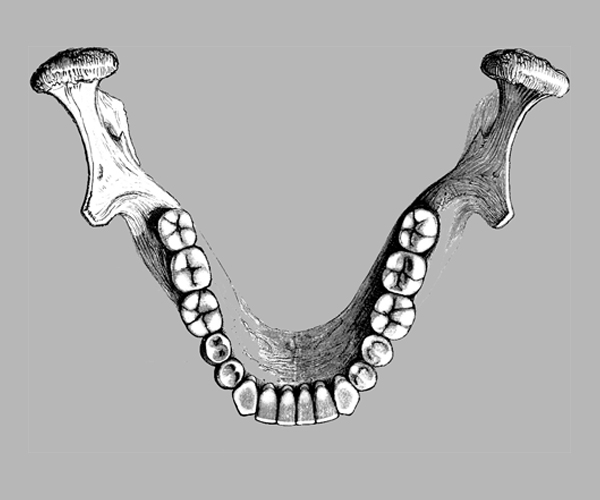

International Tooth Chart Numbering with Names Of Individual Teeth
Upper Arch
Right Maxillary Anterior Teeth
Right Maxillary Posterior Teeth
Left Maxillary Anterior Teeth
Left Maxillary Posterior Teeth
Lower Arch
Right Mandibular Anterior Teeth
Right Mandibular Posterior Teeth

Left Mandibular Anterior Teeth
Left Mandibular Posterior Teeth